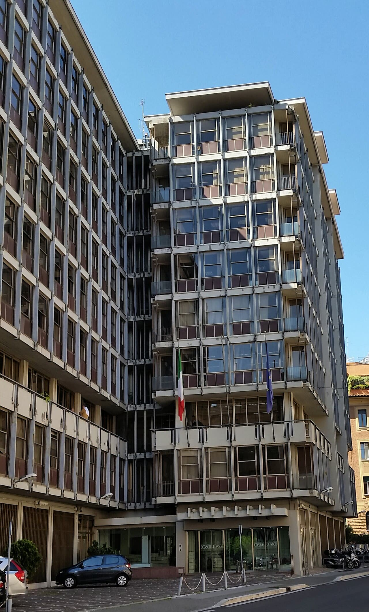

Mps, via libera Consob: l'offerta di Intesa parte il 24 novembre
Decidono i soci, ed è giusto. Ma sulla concorrenza decide l'Antitrust, e il Tesoro venda il suo 4,9%.
Redazione Contrappunto · aggiornato il 09.11.2026


Intesa Sanpaolo, la banca guidata da Carlo Messina, ha lanciato un'offerta pubblica di acquisto e scambio (Opas) su tutte le azioni del Monte dei Paschi di Siena (Mps): è Intesa che compra Mps, non il contrario. La Consob, l'autorità che vigila sulla Borsa, ha approvato domenica 8 novembre il documento d'offerta. Per ogni azione Mps Intesa dà 1,25 euro in contanti e 1,664 nuove azioni Intesa; le adesioni si aprono il 24 novembre e, per ANSA, TgCom24 e Il Sole 24 Ore, chiudono il 22 gennaio 2027, con pagamento il 29 gennaio (Il Messaggero scrive 27 gennaio per la chiusura). Manca ancora il via libera dell'Antitrust. Non abbiamo letto il documento d'offerta né il comunicato di Intesa o della Consob (il sito di Intesa non era raggiungibile): solo ciò che ne scrivono le testate.
Vedi di più: 4 parole spiegate, cosa si racconta
Cosa si raccontaANSA, TgCom24 e Il Sole 24 Ore (inglese, firma di Luca Davi) raccontano un passaggio tecnico, ultimo prima delle adesioni. Il Messaggero (paywall, letto solo il testo visibile) aggiunge cifre e rischi antitrust: sinergie per 2,9 miliardi l'anno, 635 sportelli Mps ceduti a Unipol e poi a Bper, possibili altre decine di filiali da vendere e una «muraglia cinese» sul 13,3% di Generali. Domani (centro-sinistra, paywall, solo l'attacco) il 29 ottobre scriveva che la bocciatura del piano di Lovaglio ha ridimensionato i piani del governo sulle banche, con «delusione a Chigi». Non abbiamo trovato né letto pezzi di sinistra o di destra sul via libera di domenica. [ANSA] [TgCom24] [Il Sole 24 Ore] [Il Messaggero] [Domani]
- Opas
- Offerta pubblica di acquisto e scambio: chi offre paga i soci della società bersaglio in parte con denaro e in parte con proprie azioni (TgCom24, Il Messaggero).
- Consob
- Autorità che vigila sui mercati finanziari; deve approvare il documento d'offerta prima che le adesioni comincino (ANSA).
- Antitrust
- L'Autorità garante della concorrenza e del mercato: può chiedere a Intesa di vendere filiali o di rispettare condizioni, in particolare sulla quota in Generali (ANSA, Il Sole 24 Ore).
- Riapertura dei termini
- Cinque sedute di Borsa in più, dal 1° al 5 febbraio 2027, se ne ricorrono i presupposti, con pagamento il 12 febbraio (Il Messaggero; Il Sole 24 Ore dà le stesse date).
- La Consob ha approvato l'8 novembre documento e prospetto dell'Opas di Intesa su Mps: adesioni dal 24 novembre al 22 gennaio 2027, salvo proroghe (ANSA, TgCom24, Il Sole 24 Ore).
- Il prezzo per ogni azione Mps: 1,25 euro e 1,664 azioni Intesa (ANSA, TgCom24, Il Sole 24 Ore). Il valore totale è discordante: 31,4 miliardi (Il Messaggero), 31,8 (ANSA), 33 (Domani, 29 ottobre).
- Resta l'Antitrust: per ANSA il parere finale accoglie in sostanza gli impegni di Intesa, con qualche decina di filiali in più da cedere.
ANSA, TgCom24 e Il Sole 24 Ore danno il via libera della Consob come ultimo atto prima delle adesioni, e le date tornano: dal 24 novembre al 22 gennaio. Il racconto regge a metà. Il Messaggero scrive 27 gennaio e dà l'offerta a 31,4 miliardi, ANSA a 31,8: il lettore non sa quale cifra sia giusta. E nessuno dice cosa vale la proposta per un socio, perché metà del prezzo sono azioni Intesa che oscillano in Borsa. Quindi? Decidono i soci, non lo Stato, ed è giusto; ma sulla concorrenza (Mps, Mediobanca, 13,3% di Generali) devono pesare i rimedi dell'Antitrust, non l'esito del voto. Testate di sinistra e di destra: non ne abbiamo lette. [1] [2] [3] [4]
La verifica punto per punto4 passaggi, 6 fonti
Qui sotto ogni cosa scritta sopra, una per una, con le fonti. Confermato: lo dice un documento originale o più fonti lette. Plausibile: lo riportano fonti serie, ma non abbiamo letto l'originale. Discordante: le fonti danno numeri diversi, e diciamo quali. Ipotesi e Opinione sono il nostro ragionamento, separato dai fatti.
Chi offre, quanto e quando
Intesa Sanpaolo offre su Monte dei Paschi di Siena. La Consob, con il collegio presieduto da Guido Stazi riunito domenica 8 novembre, ha approvato il documento di offerta e il prospetto (ANSA, Il Sole 24 Ore). Le adesioni vanno dal 24 novembre 2026 al 22 gennaio 2027, salvo proroghe; per ogni azione Mps Intesa riconosce 1,250 euro e 1,664 nuove azioni; pagamento il 29 gennaio (ANSA, TgCom24, Il Sole 24 Ore). Il rapporto di scambio è passato da 1,6 a 1,664 per neutralizzare lo stacco del dividendo, e il contante è salito di 25 centesimi il 3 ottobre (Il Sole 24 Ore). Il Messaggero indica come ultimo giorno il 27 gennaio.
Quanto vale l'offerta
Il valore complessivo dell'Opas, se aderissero tutti, è dato in modo diverso: 31,4 miliardi per Il Messaggero, 31,8 per ANSA, 33 per Domani (29 ottobre).
Concorrenza e Generali
Per ANSA l'Antitrust avrebbe inviato il parere finale e accolto in sostanza gli impegni di Intesa: 635 sportelli Mps a Unipol, poi a Bper, più qualche decina di filiali, e la vendita di un derivato sul 3% di Generali, tenendo il 13,3% oggi di Mediobanca. Il Messaggero parla di una «muraglia cinese» per tenere la quota in Generali puramente finanziaria. Domani il 7 novembre scriveva che il verdetto finale era atteso entro circa un mese.
Il nostro punto
Il via libera è tecnico e va bene che decidano i soci, e non lo Stato. Ma una banca che prende Mps, Mediobanca e il 13,3% di Generali concentra potere: l'Antitrust deve imporre rimedi veri, anche oltre le 'decine di filiali', e non farsi dettare i tempi dalla partenza dell'offerta. Il Tesoro, ancora azionista Mps (circa 4,9% secondo il nostro pezzo del 30 ottobre), venda e si ritiri dal gioco: il governo non deve fare il regista delle banche.
Fonti6, tutte con il link
- Via libera della Consob all'offerta di Intesa per Mps, si parte il 24 novembre (8 novembre 2026) (ANSA) · consultata il 09.11.2026
- Via libera della Consob all'offerta di Intesa per Mps (8 novembre 2026) (TgCom24) · consultata il 09.11.2026
- Intesa-MPS: Consob gives the go-ahead for the prospectus; the offer is set to begin on 24 November (8 novembre 2026) (Il Sole 24 Ore) · consultata il 09.11.2026
- Mps, via libera Consob a Intesa. L'Opas partirà il 24 novembre (9 novembre 2026) (Il Messaggero) · consultata il 09.11.2026
- Affossato il piano Lovaglio: Intesa brinda, il governo no (29 ottobre 2026) (Domani) · consultata il 09.11.2026
- Intesa e l'opas su Mps: l'Antitrust vuole più vincoli per dare l'ok (7 novembre 2026) (Domani) · consultata il 09.11.2026
Testo preparato con strumenti di intelligenza artificiale e pubblicato senza revisione umana. Come lavoriamo